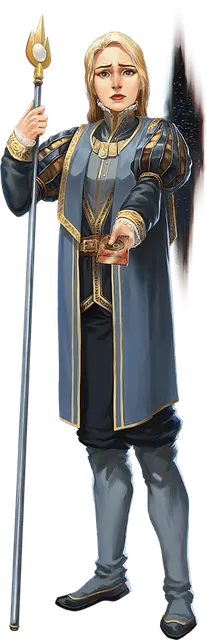

Кандидат в Комету
Aspirant of the Comet
Средний Гуманоид, любое мировоззрение

Класс Доспеха 11
Хиты 27 (5к8 + 5)
Скорость 30 футов
| мод | спас | ||
|---|---|---|---|
| СИЛ | 13 | +1 | +1 |
| ЛОВ | 12 | +1 | +1 |
| ТЕЛ | 12 | +1 | +1 |
| мод | спас | ||
|---|---|---|---|
| ИНТ | 11 | +0 | +0 |
| МДР | 10 | +0 | +0 |
| ХАР | 13 | +1 | +1 |
Чувства пассивное Восприятие 10
Языки Общий, плюс один любой язык
Опасность 1/2 (100 опыта)
Бонус мастерства +2
Особенности
Голод Пустоты. Когда хиты кандидата уменьшается до 0, его тело и всё, что он носил и нёс, за исключением магических предметов, засасываются в пустоту и уничтожаются. Существа, находящиеся в пределах сферы радиусом 15 футов, с центром на кандидате, должны совершить спасбросок Силы Сл 11. При провале существо получает 10 (3к6) урона некротической энергией и притягивается на 10 футов по прямой к пространству кандидата. В случае успеха существо получает только половину этого урона.
Темная преданность. Кандидат совершает с преимуществом спасброски от испуга и очарования.
Действия
Копье. . Рукопашная или Дальнобойная атака оружием: +3 к попаданию, досягаемость 5 футов или дистанция 20/60 футов, одна цель. Попадание: 4 (1к6 + 1) колющего урона или 5 (1к8 + 1) колющего урона, при использовании оружия двумя руками в рукопашной атаке.
Описание
Кандидаты еще не посвящены в тайны Вестников Кометы, но их уже крепко держат в цепких когтях группы, как в социальном, так и в метафизическом плане. Если кандидат погибает, невезунчика затягивается в Пустоту, которая пожирает его тело и душу.